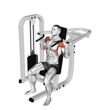
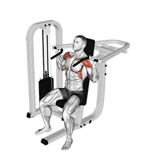

Shoulder Press Dumbell / Shoulder Press Machine (1)
Novice
 

1
For dumbbells, sit on a bench with back support, holding dumbbells at shoulder height with palms facing forward. For the machine, adjust the seat so the handles align with your shoulders.
2
Press the dumbbells or machine handles upward until your arms are fully extended but not locked out.
3
Lower the weights back to the starting position in a controlled motion. Keep your core engaged and maintain proper posture.